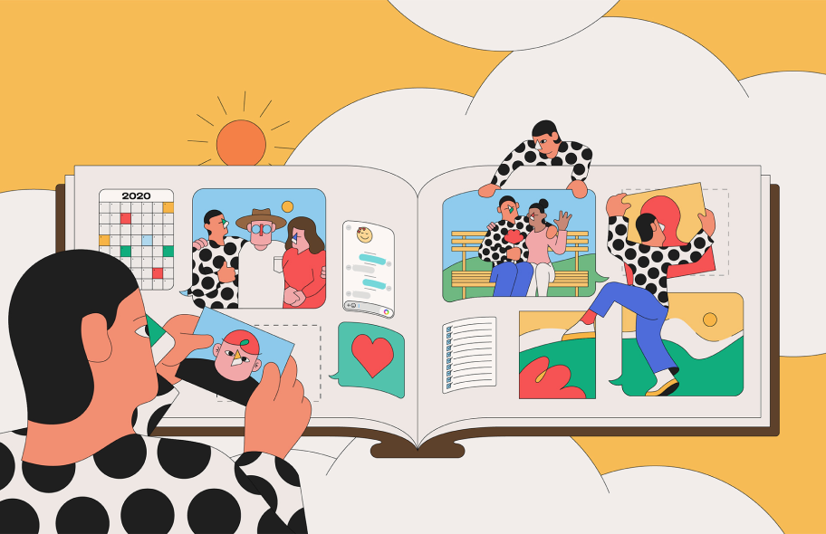

Huinca Camilo

| | |
Camilo is fascinated by everyday scenes, moments and personal habits, often depicting scenic bus routes, art galleries and public figures in his own psychedelically shaped style. “Within my work I try to reproduce real moments from an innocent and impartial perspective.” |

|